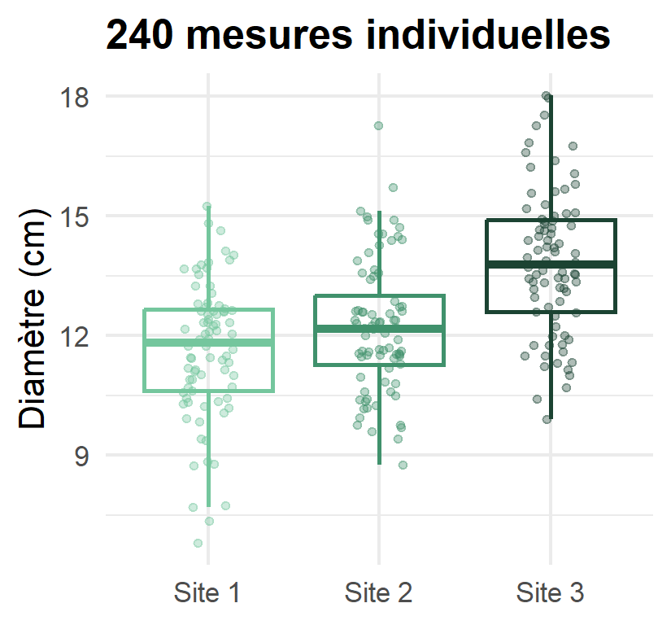
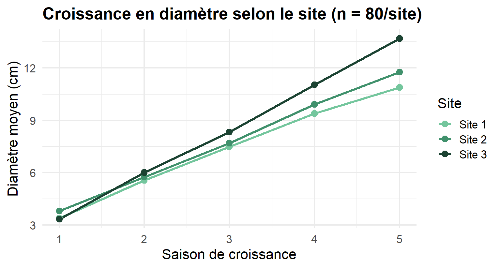
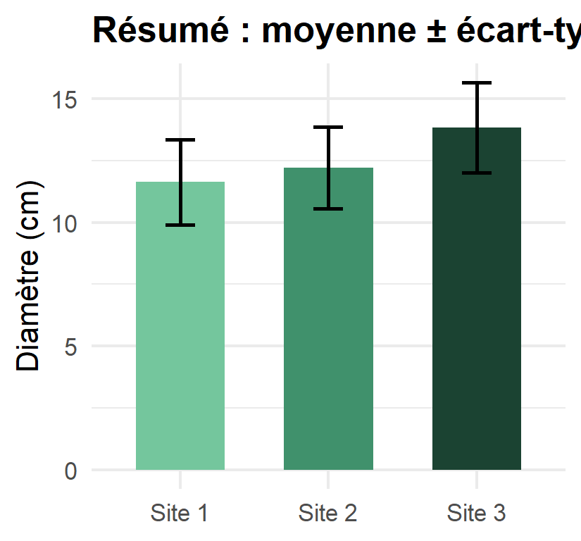
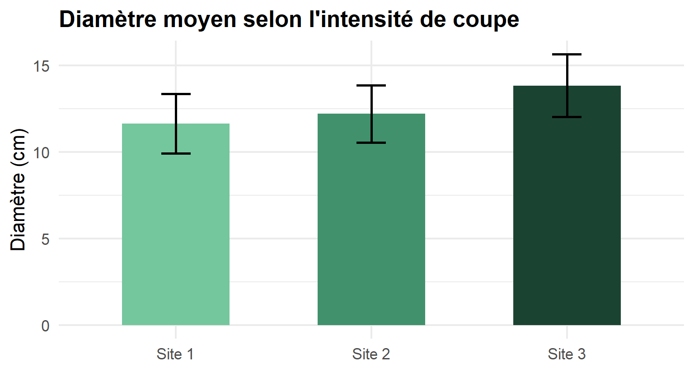
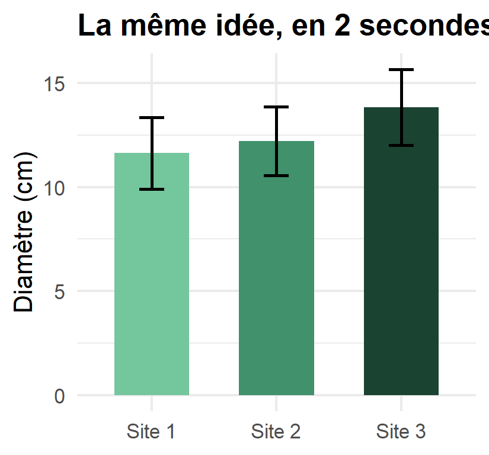

Pour que vos résultats ne restent pas… sans suite
2026-10-07
« Des résultats ? J’en ai plein. Je connais des milliers de choses qui ne fonctionnent pas. »
— Thomas A. Edison
Sans résultats solides et clairs, tout le reste de la recherche s’effondre. 💩
1. La vue d’ensemble
Le portrait général de vos expériences, sans répéter les détails méthodologiques déjà donnés ailleurs.
2. Les données elles-mêmes
Présentées au passé, organisées, sélectionnées.
🌲 Exemple : “Nous avons suivi la croissance en diamètre de 240 semis d’épinette noire sur trois sites de coupe partielle pendant cinq saisons de croissance.” (vue d’ensemble — pas besoin de réexpliquer ici comment vous avez mesuré chaque tige)

« Le fou amasse les faits ; le sage les choisit. »
— John Wesley Powell, géologue (1888)


“L’arbre 1 mesurait 12,3 cm ; l’arbre 2, 12,1 cm ; l’arbre 3, 11,9 cm… [237 arbres plus tard]”
“Le diamètre moyen des semis a atteint 12,4 ± 1,8 cm après cinq saisons (n = 240 ; tableau 2).”
🎯 Une donnée négative compte aussi : “Aucune différence de survie n’a été observée entre les trois types de préparation de terrain (p = 0,61).” — savoir ce qui n’a pas d’effet est une information utile.
“La hauteur moyenne des plants variait selon le traitement de scarifiage (tableau 1).” plutôt que “Le tableau 1 montre clairement que la hauteur moyenne des plants variait selon le traitement de scarifiage, comme on peut le voir dans le tableau 1.”
| Site | Traitement | n | Diamètre moyen (cm) | Écart-type |
|---|---|---|---|---|
| Site 1 | Coupe légère | 80 | 11,6 | 1,6 |
| Site 2 | Coupe modérée | 80 | 12,4 | 1,8 |
| Site 3 | Coupe forte | 80 | 13,9 | 2,0 |
Dans le texte, on ne répète pas ces six chiffres : “Le diamètre moyen augmentait avec l’intensité de la coupe (tableau 1).”

« 33,3 % des souris ont guéri. 33,3 % sont restées inchangées. La troisième souris… s’est sauvée. »
Si 17 arbres sur 59 ont survécu à une sécheresse…
❌ “28,8136 % des arbres ont survécu.”
✅ “29 % des arbres ont survécu.”
Ce n’est pas parce que votre calculatrice affiche huit chiffres qu’il faut tous les écrire.
« Si vous voulez décrire la vérité, laissez l’élégance aux stylistes »
— Albert Einstein
“La jambe gauche était engourdie par moments… Le deuxième jour, le genou allait mieux, et le troisième jour, il avait complètement disparu.”
De quoi parle ce “il” ? De l’engourdissement ? Du genou ? Le lecteur devine — et devine mal.
Ce qui fonctionne dans un tableau d’article ne fonctionne presque jamais projeté tel quel sur un écran.
🌲 Un tableau de 12 lignes × 8 colonnes de mesures dendrométriques = personne ne le lit, tout le monde décroche.
| Arbre | Site | DHP_cm | Hauteur_m | Volume_dm3 | Etat_sanitaire | Annee | Releve |
|---|---|---|---|---|---|---|---|
| 1 | Site 2 | 16.4 | 8.8 | 44.2 | Moyen | 2024 | Terrain A |
| 2 | Site 3 | 12.7 | 9.6 | 40.8 | Bon | 2024 | Terrain A |
| 3 | Site 3 | 17.4 | 6.3 | 39.4 | Moyen | 2024 | Terrain B |
| 4 | Site 3 | 16.6 | 9.5 | 55.0 | Moyen | 2024 | Terrain A |
| 5 | Site 2 | 12.6 | 8.2 | 33.9 | Bon | 2024 | Terrain B |
| 6 | Site 3 | 15.8 | 8.9 | 43.6 | Moyen | 2024 | Terrain A |
| 7 | Site 2 | 12.9 | 8.7 | 48.1 | Faible | 2024 | Terrain B |
| 8 | Site 2 | 10.2 | 6.8 | 57.2 | Bon | 2024 | Terrain A |
| 9 | Site 3 | 11.4 | 7.7 | 38.0 | Bon | 2024 | Terrain A |
| 10 | Site 2 | 12.0 | 7.0 | 42.1 | Moyen | 2024 | Terrain A |
| 11 | Site 3 | 14.0 | 8.9 | 31.9 | Moyen | 2024 | Terrain B |
| 12 | Site 3 | 13.7 | 8.1 | 41.1 | Bon | 2024 | Terrain A |

Basé sur : Day, R.A. & Gastel, B. How to Write and Publish a Scientific Paper, 9ᵉ édition, chapitre 12.
Questions ?
Rédaction scientifique — Résultats
Comment organiser ? Trois façons
🌲 Une étude sur l’effet du reboisement après feu pourrait suivre l’ordre : régénération naturelle → régénération assistée → mortalité par site, plutôt qu’un fouillis chronologique de visites de terrain.